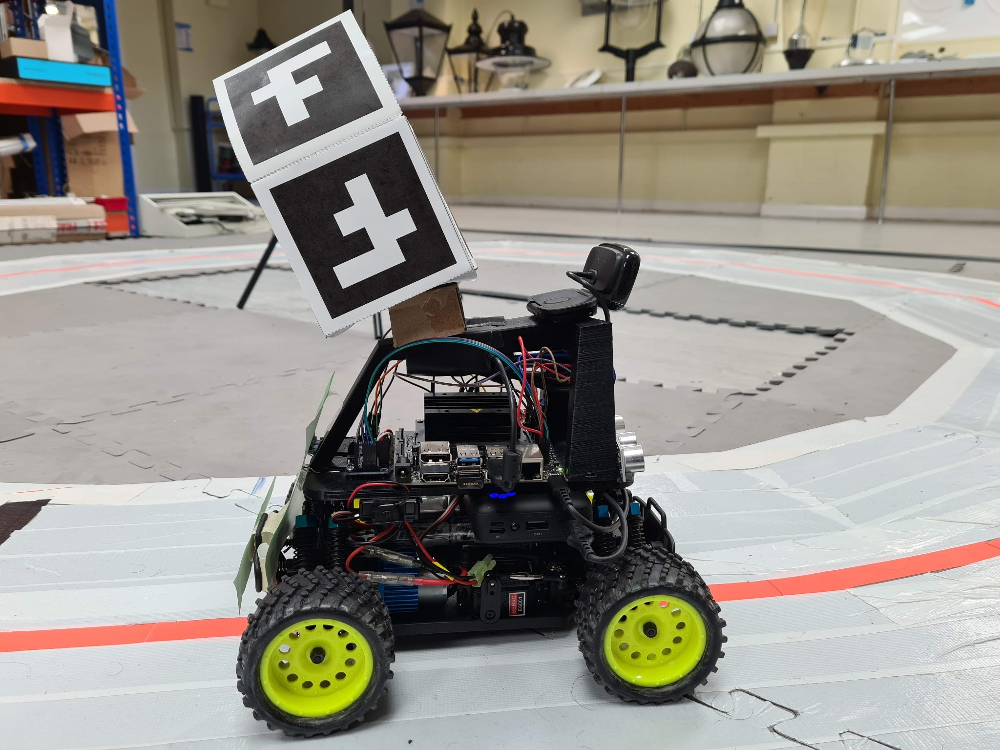
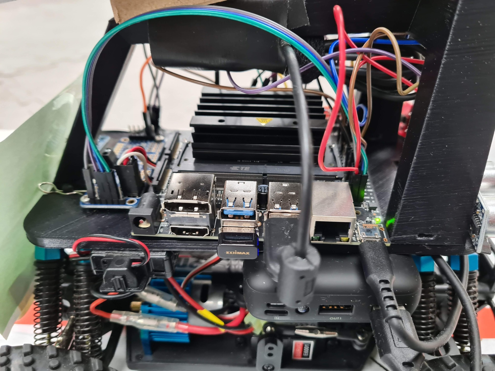
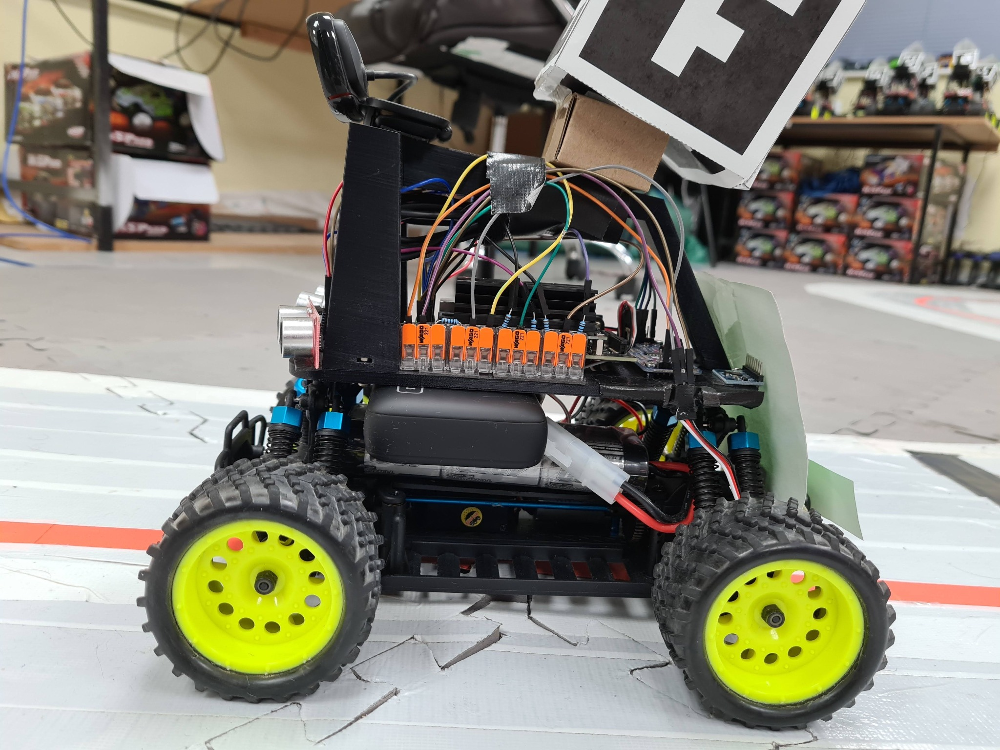
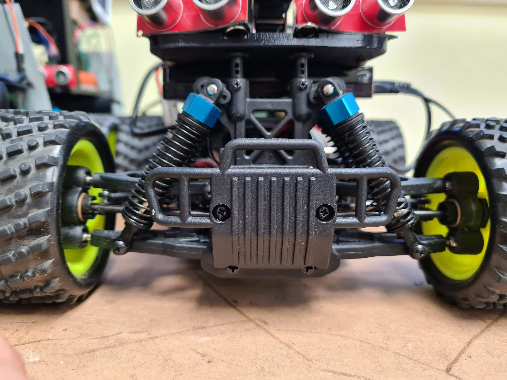
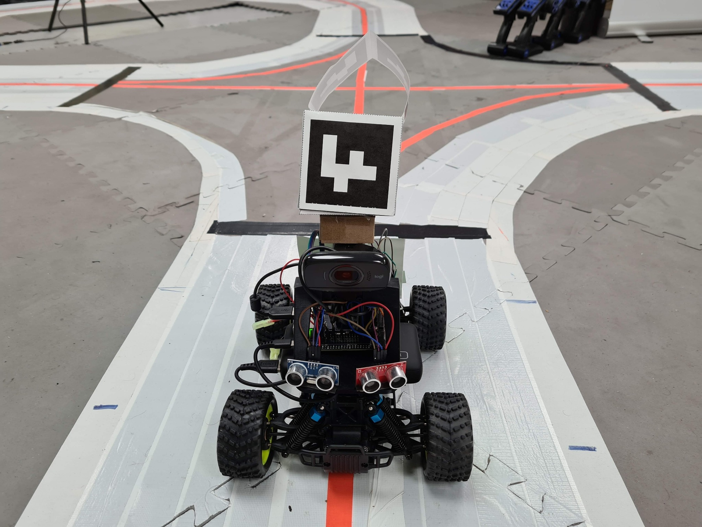
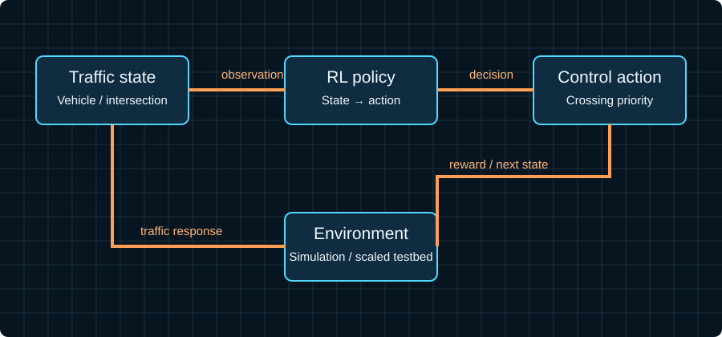
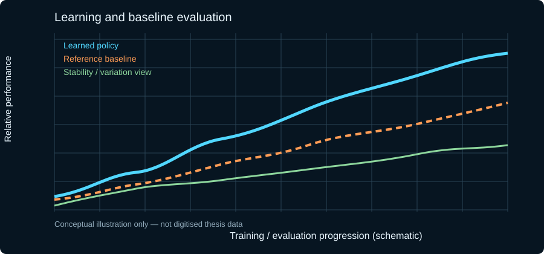
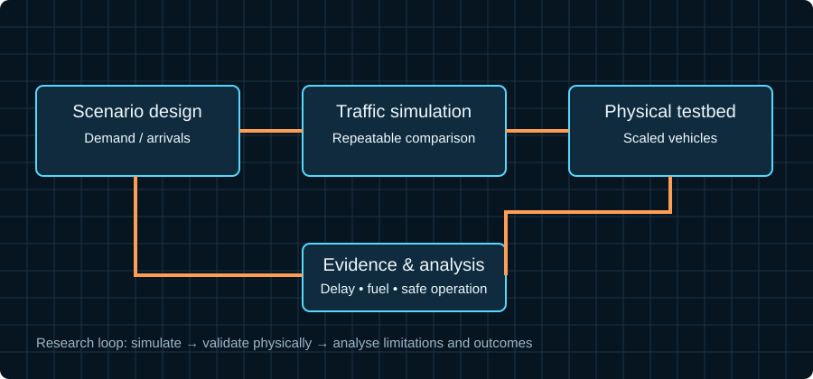

PROJECT 06 / PHD RESEARCH
Reinforcement Learning for Safety Critical Systems
A learning-based traffic-intersection controller validated in simulation and on a physical scaled-vehicle testbed.

DOCTORAL RESEARCH · OXFORD BROOKES UNIVERSITY · 2021
My doctoral contribution: learning-based intersection control from formulation to physical validation
My PhD thesis, Connected and Automated Vehicle Enabled Traffic Intersection Control with Reinforcement Learning, investigated an alternative to conventional signalised junctions. The controller uses reinforcement learning to learn a policy that selects vehicle crossing priorities from the evolving intersection state. Vehicle and infrastructure observations inform the policy; the resulting decisions coordinate entry into the conflict zone while the reward formulation balances traffic efficiency with safe, orderly movement. The work studies how this learning-based controller can be evaluated against conventional signalised control.

Simulation, testbed and evidence
My methodology joined three evidence layers. First, I formalised intersection coordination as a sequential decision problem: the state had to describe the evolving traffic situation, the action represented a crossing/priority decision, and the reward balanced throughput and delay against safe, orderly movement. Second, I evaluated the learned policy in a repeatable simulation environment against a conventional signalised baseline. Third, I transferred the approach to a physical scaled-vehicle testbed to expose the practical effects of sensing, communication, timing and execution that a simulator alone cannot reproduce.
My work therefore covered the complete research loop: problem formulation, state/action/reward design, learning and experiment strategy, scenario construction, baseline selection, quantitative analysis, and validation beyond simulation. I used the physical setup to test whether the decision policy remained meaningful when the system was embodied in real vehicles and infrastructure.

In the thesis evaluation, the proposed method showed up to 84% lower vehicle delay and 41% lower fuel consumption than the traditional signalised-control baseline in the tested scenarios. These are results for the evaluated setup, not universal guarantees.

Technical method and research decisions
I investigated the intersection as a shared conflict zone rather than treating each vehicle as an independent route planner. The controller had to reason about competing arrivals and coordinate passage without relying solely on a fixed signal cycle. I compared the learned approach with conventional signalised control, and interpreted the outcome against the scenario design and assumptions used in the study.
For safety-critical learning, the important engineering questions are broader than reward convergence: what information is observable, which actions are permitted, how the policy behaves under conflicting demand, how performance changes with scenario composition, and what evidence is required before a simulated policy can be trusted on physical equipment. The thesis documents these questions through simulation, scaled-vehicle experiments and quantitative comparison.

Why it matters
The contribution is the end-to-end investigation: state and communication design, reinforcement-learning policy development, simulation evaluation, physical validation and comparison against a conventional traffic-control baseline. The safety-critical angle is central: learning-based decisions need defined observations, explicit constraints, measurable performance, repeatable validation and a clear understanding of the conditions under which results hold.
THESIS EVIDENCE / RESEARCH VISUALS
From decision formulation to measured outcomes



RESEARCH LEADERSHIP / REINFORCEMENT LEARNING
Core research expertise
- Reinforcement-learning formulation for cooperative intersection control, including state representation, action selection and reward design.
- Connected and automated vehicle coordination using vehicle/infrastructure observations and evolving traffic state.
- Simulation-based experimentation, controlled baselines and repeatable scenario design.
- Transfer from simulation to physical scaled vehicles, including communication, sensing and execution constraints.
- Quantitative evaluation of delay and fuel consumption, with results interpreted in the context of tested scenarios.
- Safety-critical evaluation questions: constraints, edge cases, robustness, reproducibility and limits of generalisation.
My research contribution and technical direction
I connected learning-policy design to an executable traffic-control system and an empirical evaluation path. My contribution was to define the control problem, develop and evaluate the reinforcement-learning approach, compare it with conventional signalised control, validate behaviour on a physical scaled setup, and report the outcomes with the experimental scope and limitations made explicit.
In the evaluated scenarios, the thesis reports reductions of up to 84% in vehicle delay and 41% in fuel consumption relative to the traditional signalised-control baseline. These figures describe the study conditions rather than universal performance guarantees.